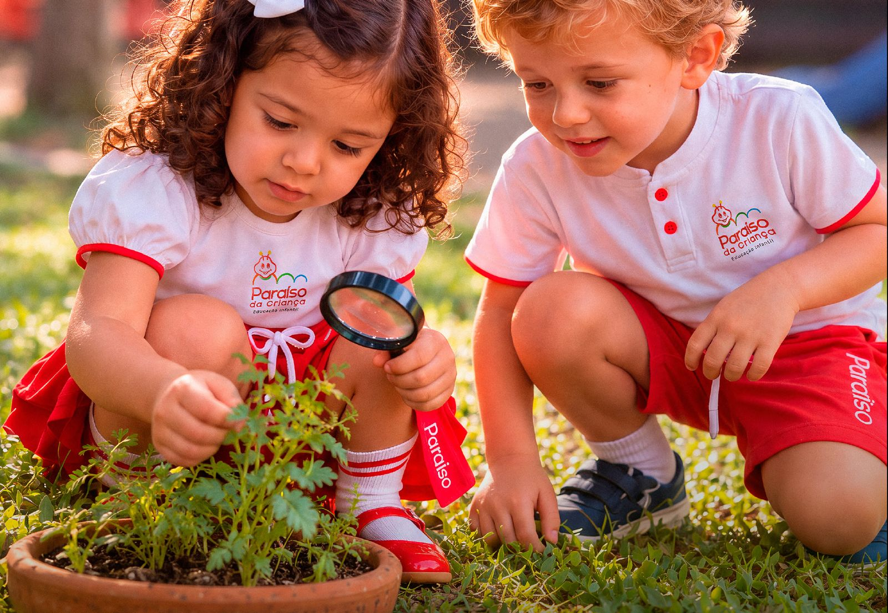
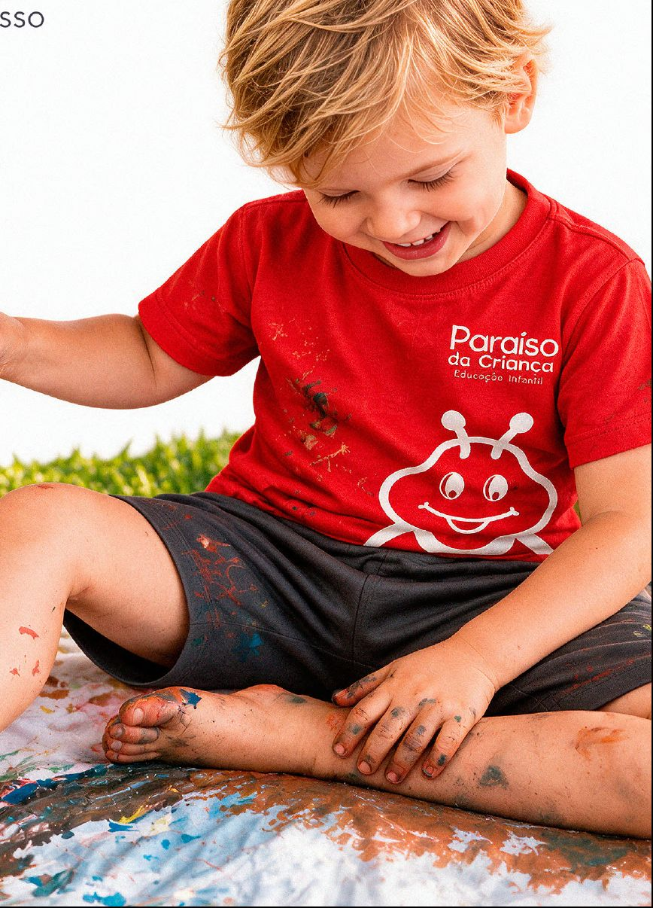

Investigar
Observar fenômenos, explorar materiais, levantar perguntas e construir descobertas.
Do Maternal 1 ao Nível 5, de 1 a 5 anos. Aqui, cada pergunta pode virar investigação, e cada brincadeira, descoberta.

A criança observa, pergunta, experimenta e cria hipóteses na relação com o ambiente, com os amigos e com os educadores.
Nossa prática reconhece essa potência e respeita as diferentes formas de aprender.
O brincar está no centro da Educação Infantil. Brincando, a criança imagina, negocia, se movimenta, expressa sentimentos e constrói relações.
Observar fenômenos, explorar materiais, levantar perguntas e construir descobertas.

Experimentar linguagens artísticas, imaginar possibilidades e expressar ideias.

Construir vínculos, compartilhar experiências e participar da vida coletiva.
Ambientes adaptados à idade, com nomes que vêm da natureza.
Musicalização, yoga, ballet, capoeira, inglês, robótica e oficinas fazem parte da rotina.
O que você precisa saber para planejar a rotina do seu filho(a) com tranquilidade.
Lanche da tarde contratado da escola ou trazido de casa, seguindo o cardápio escolar.
Venha ver como as descobertas acontecem no dia a dia do Paraíso.